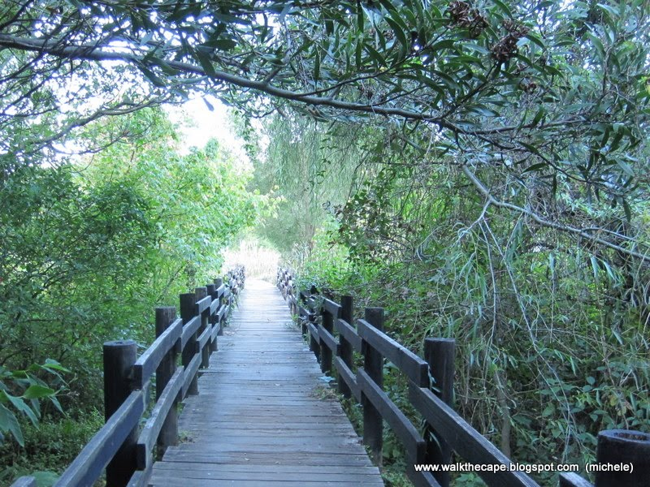
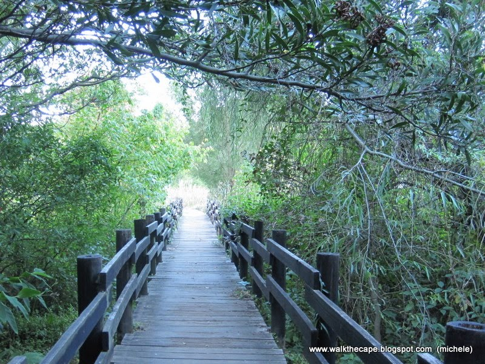

Address: Spectacular rock traverse across the Africa amphitheater between Arrow Buttress and Right Face Buttress
Location:
Address: 31 Alphen Dr, Alphen, Cape Town, 7806
Location:
Address: Fish Hoek
Location:
Address: Tanner St, Montagu, 6720
Location:
Address: 25 Rocklands Rd, Murdoch Valley South, Simon's Town, 7975
Location:
Address: 9 Ryk Tulbagh Cl, Parel Vallei, Cape Town, 8001
Location:
Address: Neptune Road, Kei Mouth, 5260, East London, Eastern Cape, South Africa
Location:
Address: 267 Main St, Esterville, Paarl, 7646
Location: